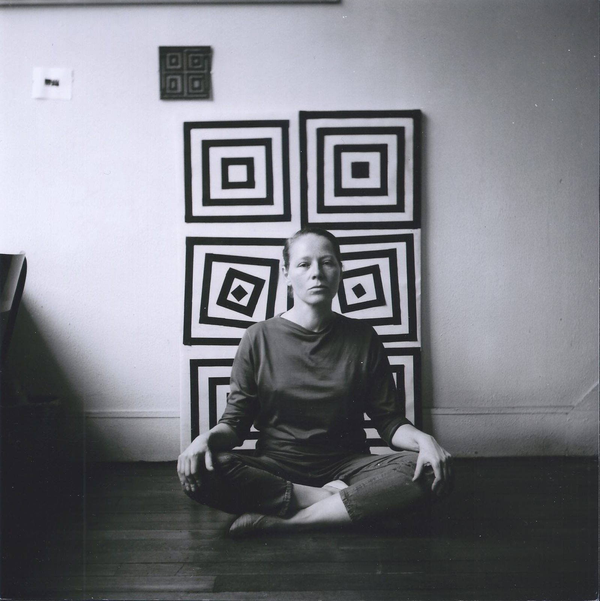
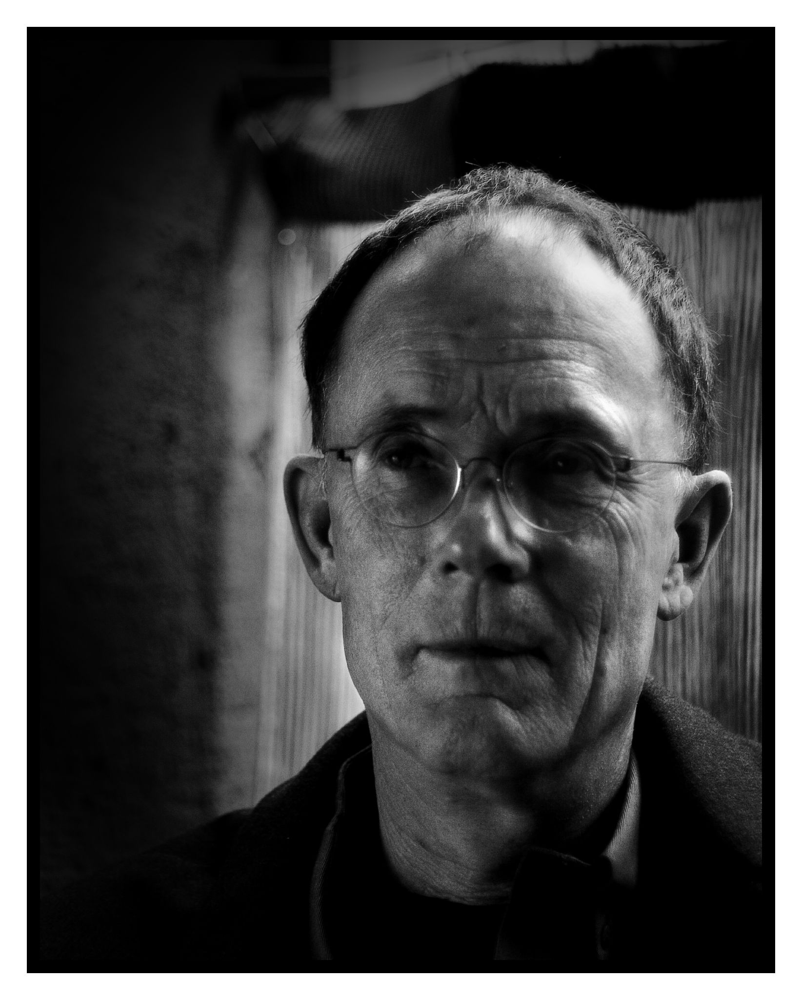

👋🏻 Hi! I'm
Joel. My pronouns are he/him. I'm 41 and I live in London near Epping Forest with my fiancee and two cats.
We have 90 minutes together this today. I'm going to present for about 45 minutes, leaving 45 minutes at the end for Q&A and discussion, so if it's ok, please remember your questions when they come to you and ask me them in about 45 minutes? 🙇🏻
This talk is split into three parts:
- ⏳ Past: my background
- 🎁 Present: some things I've learnt along the way and a thought for each of your projects
- 🔮 Future: ten thoughts on the future
1. ⏳ Past
🏴 Wales and being bored.
🤖 1997 and Neuromancer/OK Computer/Bladerunner.
✨ Imperial and Star Wars.
⏰ Royal College of Art and being earlylate.
🇮🇹 Fabrica and not starving.
🧘🏻♀️ Teaching and psychic load and meditation.
2. 🎁 Present
🧠 First, some things to keep in mind and second, a thought on each of your projects.
Some things to keep in mind:
- 🐟 Dorey
- 🛹 Henrick Kniberg on making skateboards
- 🦆 A rubber duck
- ⛑ Cassie Robinson's thoughts
- 💀 Chuck Wendig on being a magic skeleton
- 🌊 David Bowie on being out of your depth
- 📸 Yohji Yamamoto on copying
- 🐌 On going slow
- 🙉 Susan Wendell on hearing disabled people

Henrick Kniberg on how to make a car. In other words, if you want to make a car, make a skateboard, then a scooter, then a bicycle, then a motorbike and THEN a car. I want you to make lots of skateboards.

Just a little out of your depth is the right place to be.

Just try. As soon as you try you are way ahead of most other people.

Susan Wendell wrote powerfully about disability and feminism. What explosion of knowledge could you make with your life?
🤯 A thought/provocation/question on each of your projects:
🦾 Charisma: Future Vision - what happens when assistive technology takes "disabled" people beyond the capabilities of "able" people?
🕰 Diverse Interactive: Contented - how can non-north western perceptions of time feed into this?
💣 Furness Films & Curly TV: Bdivtz Bombing - how can this connect to children being bombed today?
🤥 Indigo Storm: The Museum of Imagined Futures - what is the thing happening today that no one will believe in the future?
🏡 No Ghost: Bombay Jungle - how can you tell the story of relations between first, second and third generation imigrants? Does this repeat?
🚲 Surround Vision: Life Cycles - what did the invention of the bicycle do to the genetic variation of the UK population? What did it do to accents?
💃🏻 ShroomStudio: Promenade - how can dance and the body be an interface to this archive?
👩🏻🎤 Visualise: Get Punked! - did punk die when wigs started appearing in Woolworths? How can you infuse the spirit of three chords now form a band?
⚧ Electric Skies: Kindred - how can you make non-binary identiy the least interesting part of this story?
3. 🔮 Future
Ten thoughts on the future

4. The future is the same stuff, but rotated. Image by
Dhiru Thadani.

5. The future is random - as an art and design tool. See
fantastic short documentary on the artist
Vera Molnar, and how she harnesses randomness in her work: "there is a thing that can replace intuition. It's randomness... it enriches the senses."

6. The future is short. You don't have much time. Why not do something interesting? You probably have time for four or five 10 year projects. What are they? Image and article by
Wait But Why.

7. The future is layered. It's our job to experiment wildly! We have to test the future. Then slower things can filter those tests. Image and article by
Stewart Brand.

8. The future is
Atemporal. As William Gibson says: "Very creative people get atemporal early on. Are relatively unimpressed by the “now” factor, by latest things. Access the whole continuum. Less creative people believe in “originality” and “innovation”, two basically misleading but culturally very powerful concepts. "Your bleeding-edge Now is always someone else’s past. Someone else’s ’70s bellbottoms. Grasp that and start to attain atemporality." Image by
Gonzo Bonzo.
What questions do you have for me?
Thanks to Claire Cook, Kylie Bryant and Anna Firbank. If you are nervous about asking questions, or you think up a question later, you can get in contact
via my website or ask Claire.
This presentation was made using
Big.